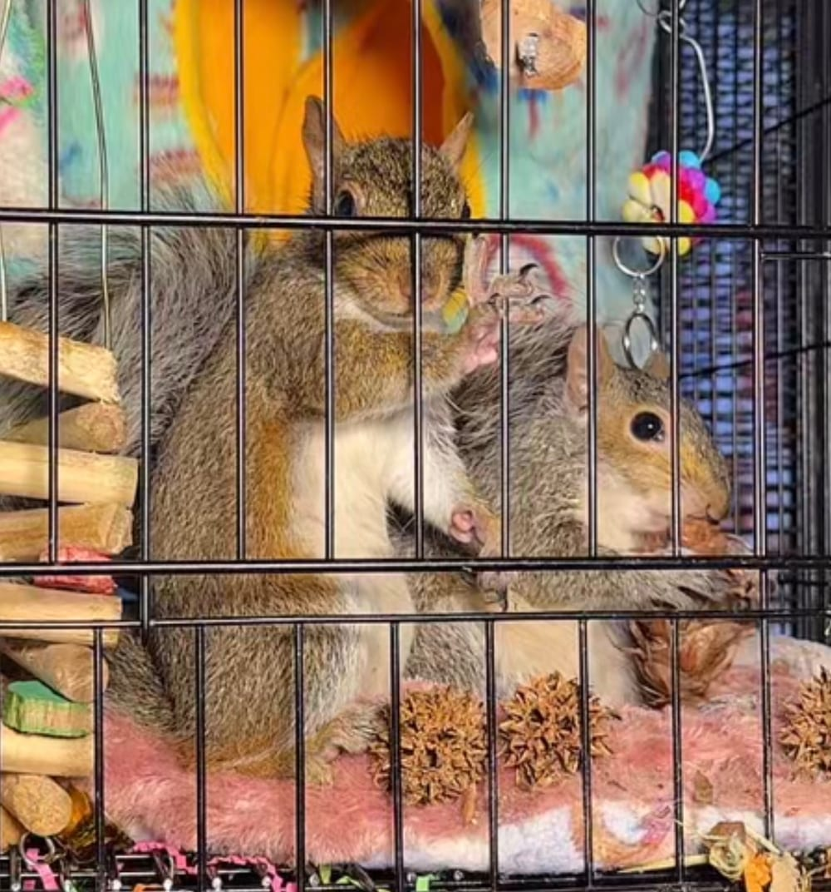
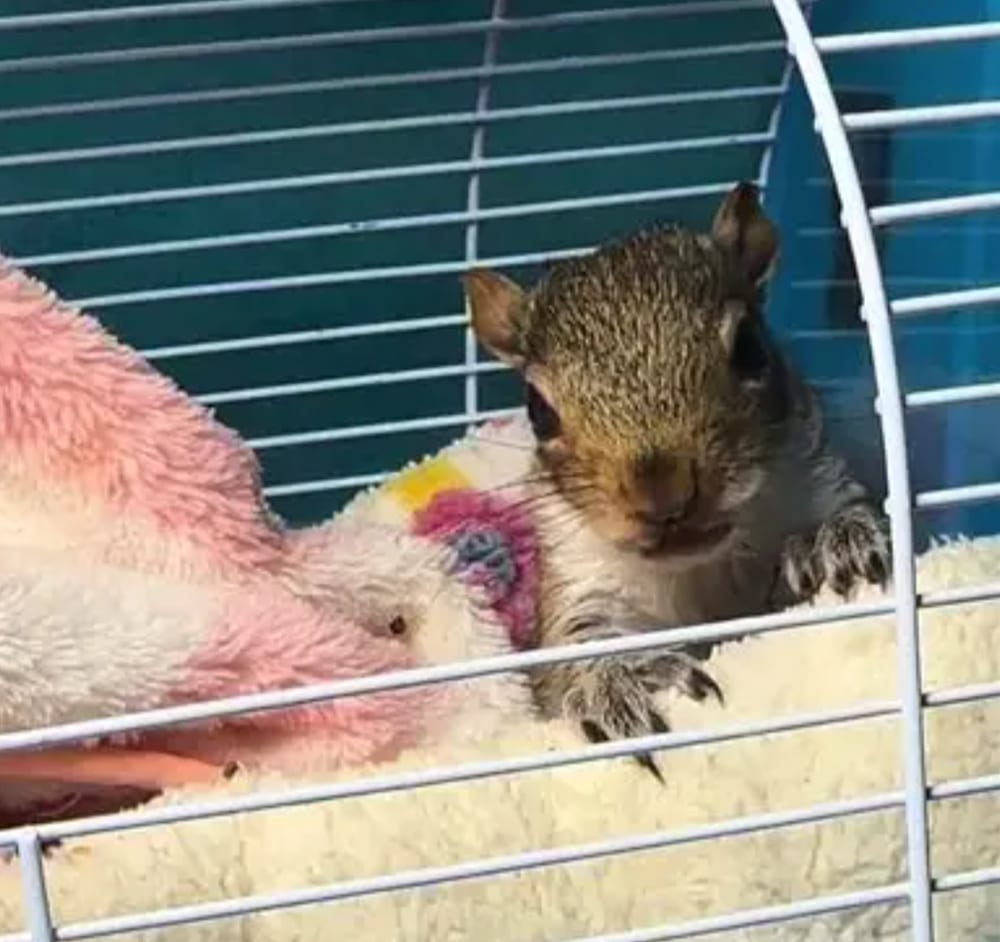

Contacting payment processor…
Squirrels aren't for sale. They never were.
You got sent here on purpose. If you came from a wildlife rehabber's stream and asked to buy one of the babies, thank you for loving them. Here's the part that actually matters.
They have to gnaw constantly to wear them down. That means your baseboards, your furniture, your drywall, your phone charger, and the wiring inside your walls. It's not a training issue. It's a dental requirement.
Dogs and cats have thousands of years of living alongside us baked into them. Squirrels have none of that. A hand-raised squirrel is a wild animal that happens to tolerate you, and that tolerance often evaporates around 6 to 8 months old when it hits sexual maturity.
Those incisors go through skin, and sometimes through to bone in a finger. Squirrels also bite reflexively when startled, which for an animal whose whole survival strategy is "panic first" is a lot of the time.
In the wild they travel dozens of trees a day, climbing and jumping constantly. No cage you can fit in a house comes close. Confined squirrels get neurotic: pacing, self-mutilation, screaming.
The instinct to cache food doesn't switch off indoors. You'll be finding rotting walnuts in couch cushions, shoes, and coat pockets for years.
There's no litter box concept here. They go where they are, including on you.
Squirrels are "exotics," and a lot of clinics won't touch them. Finding someone who can treat metabolic bone disease, which captive squirrels get constantly from bad diets, can mean driving hours.
Nuts alone will slowly kill them. They need specific calcium-to-phosphorus ratios, rodent block, and a rotating variety of produce. "Nut" is the classic mistake.
The majority of U.S. states ban keeping native squirrels outright, and the ones that allow it usually require permits. Getting caught can mean fines and confiscation.
Where you live decides whether owning one is outright banned, permit-only, or a gray area, and most people never check until something goes wrong. Even where it's allowed, exotic vets who will see a squirrel are few and far between, so routine care turns into phone calls and long drives.
Chattering, barking alarm calls, and clawing at cage bars at 5 a.m.
Captive squirrels can outlive the enthusiasm that got them there, and rehoming one is nearly impossible. Sanctuaries are full, and a hand-raised squirrel usually can't be released.
Once it's imprinted on people, it has no fear of dogs, cars, or strangers. Releasing it later isn't a happy ending.
These aren't products. They're patients, being raised so they can go back out where they belong.


Photos used with permission. Nothing here is for sale.
Licensed wildlife rehabilitators don't get paid. There's no state funding, no salary, no reimbursement. The formula, syringes, incubators, heating pads, cages, vet bills and 2am feedings all come out of their own pockets.
NYS-DEC Licensed Wildlife Rehabilitator · Multi-Species
KL takes in orphaned and injured wildlife around the clock and gets them back outside where they belong. Rescue, rehab, release. No salary, no grants, no reimbursement. If you came here from her stream, this is the part that actually helps.
Donate. Even $5 toward fresh fruit helps feed a hungry mouth.
Send supplies. Wish list items, formula, bedding, cages.
Share it. Likes and follows cost you nothing and get this in front of the next person who needs to read it.
linktr.ee/cookieKL
Still want squirrels in your life? Put up a feeder. Plant an oak. Leave out water in the summer. Throw a rehabber five bucks. That's how you love a wild animal, by letting it stay wild.
This site is a joke with a point. Nothing on it is for sale, and nothing ever will be.